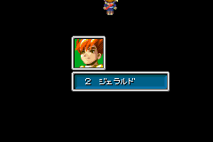
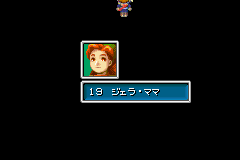
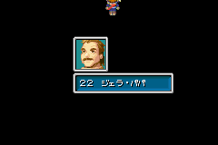
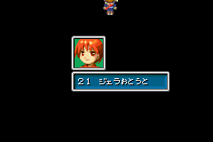
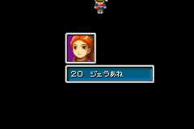

Oh yes, the...
Jerra conspiracy. Okay.
Oh yes, the...
Jerra conspiracy. Okay. You don't see so many people using it these days.
You don't see so many people using it these days.
 I'm not sure why this even
has an entire page anymore.
I'm not sure why this even
has an entire page anymore.
 Well it does, so deal with
it.
Well it does, so deal with
it. Imagine all the
effort it would take to just stick this on the Translation Issues page.
Imagine all the
effort it would take to just stick this on the Translation Issues page.
 Enough snarking, just
explain it already!
Enough snarking, just
explain it already! One
of the debug rooms gave Garet a last name. Despite the rest of us not having
them.
One
of the debug rooms gave Garet a last name. Despite the rest of us not having
them. And thus the
webmistress took it upon herself to make an entire page about it. Okay then.
And thus the
webmistress took it upon herself to make an entire page about it. Okay then.
|  | Incriminating picture #1!
This is Garet's name, using the debug room in Ougon no Taiyou: Hirakareshi Fuuin... er, the Japanese version of Golden Sun, and did you know, the original Japanese version had a title, like The Lost Age? Hirakareshi Fuuin translates to The Broken Seal. Ok, now we have Katakana characters here. Je-ra-ru-do. So what does Jerarudo translate to? Gerald. That's Garet's Japanese name of course.
|
|  | It's Garet's mother. Notice that the first two kana characters are 'Jera'. Where have we seen them before? Oh, that's right, in the kana for Gerald! The other characters say 'Mama', so we have Jera-mama...
|
|  | Incriminating picture #3.
Same thing, this time around it says Jera-papa. Gerald's father, simply enough. |
|  | Incriminating picture #4!
Again, we have 'jera' plus 'otouto' which means 'little brother'. So 'Jera-otouto' basically says it's the younger brother of Garet.
|
|  | Incriminating picture #5!
This time it says 'Jera-ane'. 'Ane' means 'older sister', so that would be Garet's older sister.
|
So there you go, that's Garet and his family... no names for any of them or anything.
So, that makes us question, where did the translators pull out a name like 'Jerra' from?
They didn't realise that 'Jera' stood for 'Jerarudo' and translated it directly to 'Jerra' and left it in there, in the debug room... They changed Jera-mama and Jera-papa to Mrs Jerra and Mr Jerra, and they gave his sister and brother names and made them Kay Jerra and Aaron Jerra...